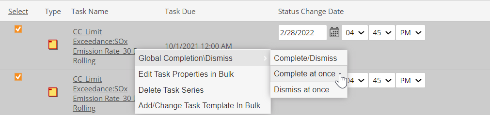
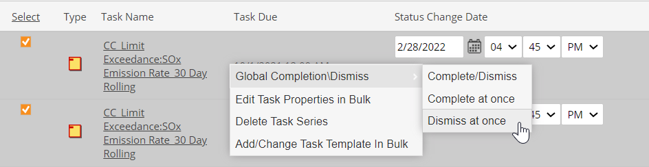
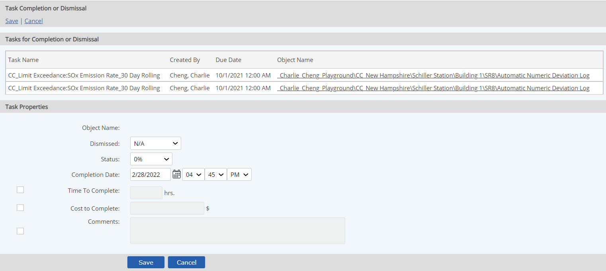

You can complete or dismiss multiple tasks at once from the Task section of the Tasks and Workflows page.
To complete or dismiss multiple tasks:
Right click and choose Global Completion/Dismiss.
You can choose one of three options:
Complete at Once: Immediately applies 100% complete status to all selected tasks with current date/time (after confirmation).

Dismiss at Once: Immediately applies Dismissed status to all selected tasks (after confirmation).

Complete/Dismiss: Opens task completion form so you may choose completion date, enter comments, and choose other task completion details, to be applied to all selected tasks.

To complete all tasks, change status to 100% and enter completion date. To dismiss all tasks, select Dismissed from the dropdown list.